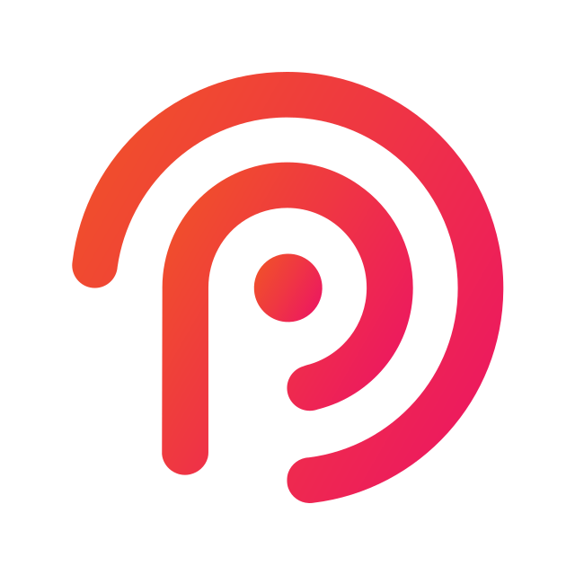

01 / ARCHITECT
Start with the right foundation.
Translate business complexity into a clear technical direction. Define boundaries, data flows, and the decisions your system will grow around.

CodePassionA visual language for software architecture: deliberate structure, generous space, and a single signal of energy. Futuristic in its precision. Luxurious in its restraint.
Original logo preserved. Coral and rose derive from the existing brand master. Colour signals connections and actions; the composition stays predominantly neutral.
ซอฟต์แวร์สำหรับธุรกิจคุณ
Software for your business.
We design and develop business software, from system architecture to integration with the tools you already use.
Noto Sans Thai / Thai + Latin / 450 · body / 400
JetBrains Mono / technical details / 400
Solid ivory primary action. Fine rules, subtle corners, generous targets. Visible keyboard focus uses the brand signal.
Translate business complexity into a clear technical direction. Define boundaries, data flows, and the decisions your system will grow around.
Dark machined metal, softly lit edges, coral light travelling through architectural layers. Subject stays inside the central crop. On mobile, copy sits above the subject.
Structure. Connection.
Possibility.
One continuous subject. A deliberate departure, an isolated signal, then a connected system. No ornamental spinning. No scroll hijacking.
* Diagram units are full viewport heights (100vh). 4 viewport heights of active travel, plus the visible stage. Frame holds are separate from continuous movement.
| Scene | Visual story | Website copy |
|---|---|---|
| 01 — The architecture | A precision-machined core reveals its layered structure on the right. Hold the opening composition for reading. | Software development & system architecture. We design and develop business software, from system architecture to integration with the tools you already use. Start a conversation → |
| 02 — The connection | Follow a coral signal away from the core. Source leaves frame; destination stays out of view. The signal travels alone. | No copy — let the motion lead. |
| 03 — The system | The same signal reaches the next structure. Components illuminate in sequence, connecting applications, data, and infrastructure. | Connect your tools and data. We connect applications, data, and workflows so your systems can work together. Explore our expertise → |
| 04 — The possibility | The complete system settles. Hold the final frame, then return to ordinary page flow. | Software for your business. We design software that can be extended as your business requirements change. What do you together → |